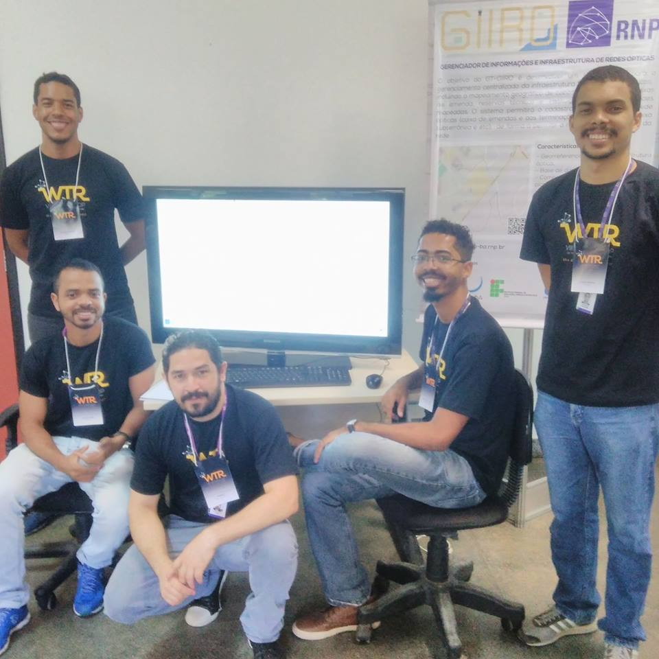
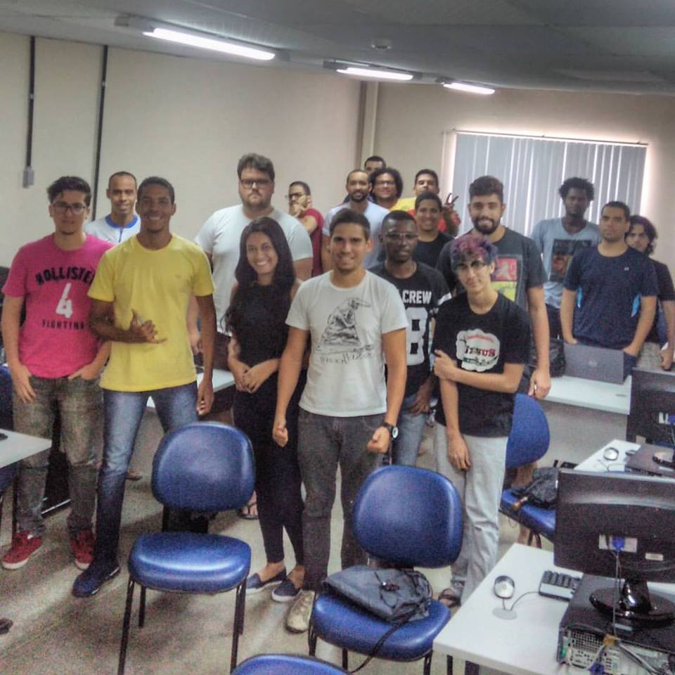
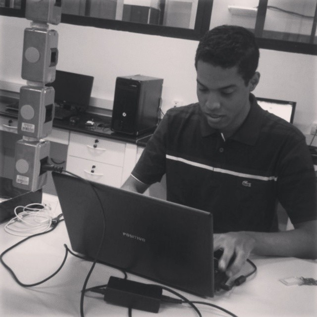

Currículo
Víctor Romário Paz de Jesus
Graduando em Engenharia da Computação - UFBA
OBJETIVO: Trabalhar na área de Pesquisa e Desenvolvimento.
GITHUB: https://github.com/VRPazdeJesus
E-MAIL: vr.paz.jesus@gmail.com
Contato WhatsAppExperiências
Acadêmicas e Profissionais

Rede Nacional de Ensino e Pesquisa - STI UFBA
- Cargo: Prestador de serviço / Desenvolvedor web full-stack
- Paríodo: Janeiro de 2018 - Junho de 2018
- Cargo: Estagiário / Desenvolvedor web full-stack
- Paríodo: Janeiro de 2016 - Janeiro de 2018
- Descrição: Com o front-end trabalhei com JavaScript, CSS3, a biblioteca Materialize e Leaflet.js. No back-end trabalhei com a linguagem Python, o Framework Django, o banco Postgres juntamente com a biblioteca de georreferenciamento Postgis, do lado do banco, e Geo Alchemy 2 no lado do python.
Rede Nacional de Ensino e Pesquisa - STI UFBA
- Cargo: Estagiário
- Paríodo: Janeiro de 2016 - Janeiro de 2018
- Descrição: Com o front-end trabalhei com JavaScript, CSS3, a biblioteca Materialize e Leaflet.js. No back-end trabalhei com a linguagem Python, o Framework Django, o banco Postgres juntamente com a biblioteca de georreferenciamento Postgis, do lado do banco, e Geo Alchemy 2 no lado do python.
Campus Party: Palestra “Não seja Fanboy de Linguagem. Vire Programador Poliglota”
- Cargo: Palestrante
- Paríodo: Maio de 2018
- Descrição: Uma apresentação que mostrou que cada linguagem tem suas vantagens e os tipos de projetos elas são bem aplicadas, desconstruindo assim a ideia de que só uma linguagem é boa para todos os projetos.
Curso sobre a Linguagem de Programação Python - Vale do Dendê
- Cargo: Instrutor
- Paríodo: Agosto de 2018 a Outubro de 2018
- Descrição: Um curso que começava do básico da linguagem e seguia avançando por estrutura de dados, desenvolvimento de programas com interfaces gráficas utilizando as biblioteca AWT, Swing e JavaFX e finaliza com programação multithread.

Curso sobre a Linguagem de Programação Java - IEEE UNIFACS
- Cargo: Instrutor
- Paríodo: Abril de 2015 a Dezembro de 2018
- Descrição: Um curso que começava do básico da linguagem e seguia avançando por estrutura de dados, desenvolvimento de programas com interfaces gráficas utilizando as biblioteca AWT, Swing e JavaFX e finaliza com programação multithread.

Bolsista de Iniciação Científica - FAPESB
- Cargo: Bolsista
- Paríodo: Agosto de 2014 a Agosto de 2015
- Descrição: Integração da linguagem Java Script com a linguagem CUDA core.
- Artigo: Simulador de Cardumes em Autômato Celular. Para acessar, clique aqui.
- Mais: Apresentação em banner do projeto de Iniciação Científica - “Integrando Plataforma Web com o CUDA Core”, na 11ª e 12ª Jornada UNIFACS de Iniciação Científica

Monitor Voluntário no Laboratório de Dispositivos Móveis e Sistemas Embarcados
- Cargo: Monitor Voluntário
- Paríodo: Fevereiro de 2014 a Julho de 2014
- Descrição: suporte aos alunos para desenvolvimento de programação utilizando as placas Arduíno.